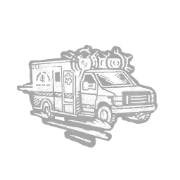

快速反应 Rapid Response
所属：奥蕾拉·罗斯（逃生者）
| 等级 | 档位 1 | 档位 2 | 档位 3 |
|---|---|---|---|
| 数值 | 30 1 | 25 | 20 |
描述
“当那一刻来临，你要全力以赴。你的生存取决于此。” 每当你受到疲惫状态效果影响时，快速反应便会触发其效果：杀手的气场对你显形2秒。执行仓促行动以解除储藏柜状态效果，持续30/25/20秒。快速反应无法用于覆盖已有的疲惫状态效果。 “好，你能行。3……2……1……开始！”——奥蕾拉·罗丝

所属：奥蕾拉·罗斯（逃生者）
| 等级 | 档位 1 | 档位 2 | 档位 3 |
|---|---|---|---|
| 数值 | 30 1 | 25 | 20 |
“当那一刻来临，你要全力以赴。你的生存取决于此。” 每当你受到疲惫状态效果影响时，快速反应便会触发其效果：杀手的气场对你显形2秒。执行仓促行动以解除储藏柜状态效果，持续30/25/20秒。快速反应无法用于覆盖已有的疲惫状态效果。 “好，你能行。3……2……1……开始！”——奥蕾拉·罗丝